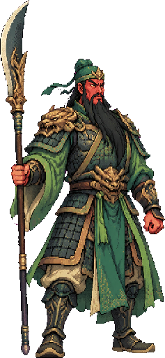
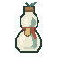
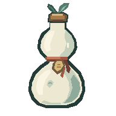
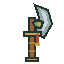
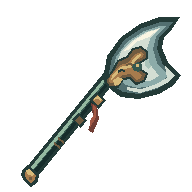

服用对象 · 关羽
疗伤丹
清除所选弟子的全部伤势


- 当前
- 关羽 · 1 层伤势 · 未出征
- 消耗
- 疗伤丹 1 颗 / 持有 2 颗
- 结果
- 清除关羽的全部伤势。
- 炼制
- 灵草 1、云木 1
- 限制
- 无伤时不可服用；出征结算后才可使用。
等待
正在给关羽服用疗伤丹，请稍候。
不可用
该弟子没有伤势。
错误
进度已有更新，已同步最新状态。请确认弟子伤势与丹药数量后再操作。
普通功能面板与高密度器物详情，沿用正式素材和实际规则。
本页为静态开发样板，示例持有量与进度不来自存档，按钮不执行操作。宽屏为桌面布局，窗口缩至 390px 显示手机布局。尚未进行视觉验收。
门下 6 位弟子 · 值守 2 / 6 · 问道塔 8 层
离开后宗门仍在修行，最多结算 12 小时收益。
问道塔已至 8 层，新的修行之路仍在前方。
门下共有 6 位弟子，2 位正在值守。
1 位弟子有伤在身，可前往炼丹房疗伤。
挂机收益已收取，可在宗门总览查看此次所得。
正在确认修行所得，请稍候。
出征尚未结算，结算后可调整值守弟子。
暂时无法确认此次修行所得，正在查询最新进度。请等待查询结果，避免重复操作；若仍无法连接，可稍后重新打开宗门总览。

清除所选弟子的全部伤势


正在给关羽服用疗伤丹，请稍候。
该弟子没有伤势。
进度已有更新，已同步最新状态。请确认弟子伤势与丹药数量后再操作。
长柄轮廓与刀刃形状优先于稀有度边框


右侧为既有独立概念稿，仅作材质比较，尚未接入正式专武详情，也不代表美术已验收。
正在锻造青龙偃月刀，请稍候。
缺少玄晶 1。当前持有 0 / 需要 1。
暂时无法确认锻造结果，正在查询最新进度。
保留器物名称、用途与操作，不用错误图片代替物品。
危险操作与服用、锻造的主操作分开排列。
人工审阅：桌面与 390px 检查长标题、长错误文案、器物轮廓、资源数字、键盘焦点与不可用原因。此页不模拟弹窗焦点陷阱、滚动锁定、网络请求或气泡计时；这些行为仍由正式组件承担。